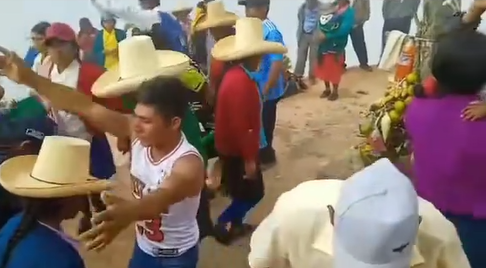
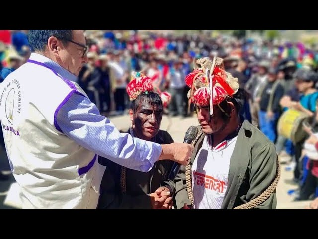
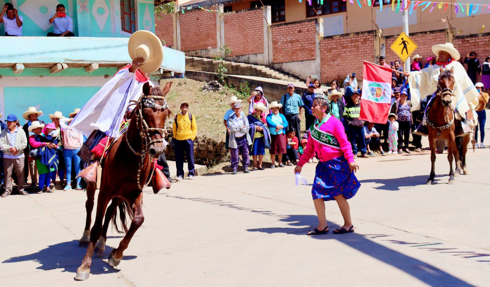
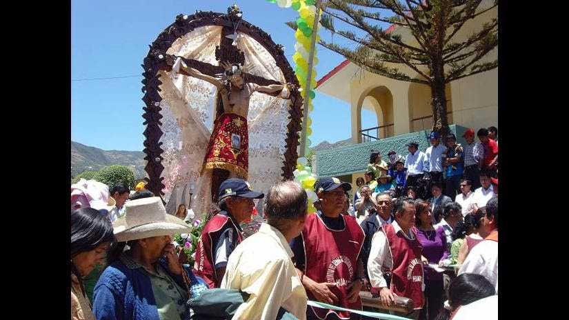
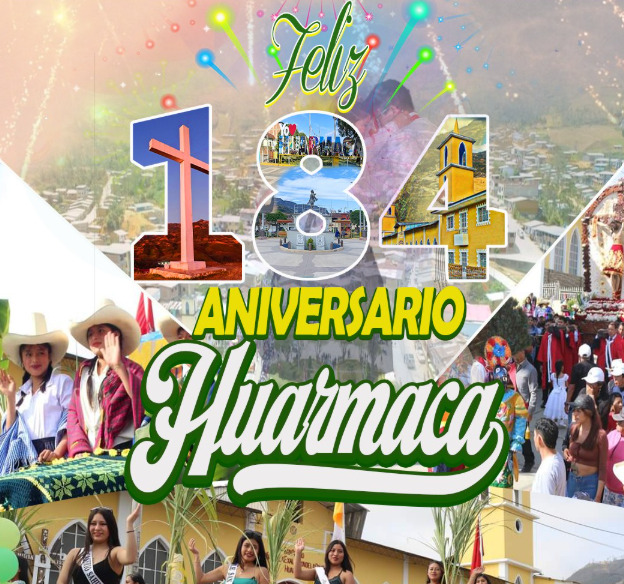
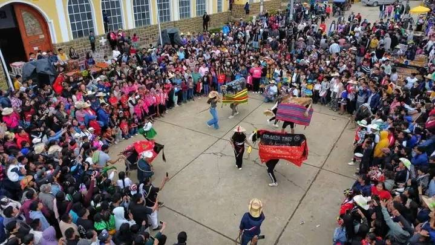

EVENTOS Y FESTIVIDADES
Tradición y Cultura de Huarmaca
Huarmaca celebra diversas festividades a lo largo del año, donde se combinan la fe religiosa, las costumbres ancestrales y la identidad cultural del distrito

1-3
MAYO
Fiestas de las Cruces
Distintos sectores

4
JUNIO
Corpus Christi
Centro de Huarmaca

24
JUNIO
Día del Campesino
Toda la ciudad

2-16
SEPT
Fiesta Patronal - Señor de la Exaltación
Toda la ciudad

8
OCTUBRE
Aniversario de Huarmaca
Toda la ciudad

12
OCTUBRE
Aniversario de Rondas Campesinas
Rosas, Huarmaca

25
DICIEMBRE
Navidad
Toda la ciudad
Danzas Típicas
Expresiones culturales tradicionales que forman parte de cada festividad.
Ferias Gastronómicas
Espacios para disfrutar de la auténtica comida tradicional huarmaquina.
Actividades Comunitarias
Reuniones y encuentros que fortalecen la identidad cultural del distrito.
💡 Recomendación para Visitantes
Durante los meses de mayo, junio, septiembre y octubre, se recomienda planificar el viaje con anticipación debido al incremento de visitantes y actividades festivas en Huarmaca.